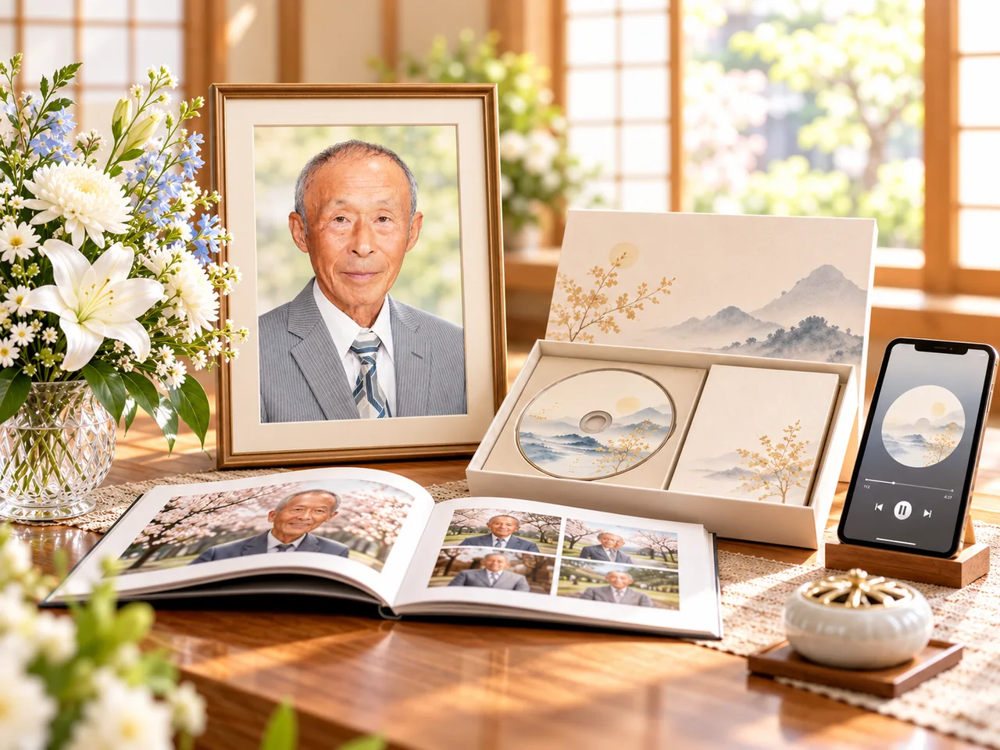

2025年に亡くなった人の数
158万9,533人人口動態統計の確定数TOWAUTA memorial
お別れを、残る記憶へ
故人の人生を、歌・映像・写真という作品に。
葬儀の日だけでなく、その後も家族に残る新しいメモリアルサービス。
投資家向け事業計画｜2026年11月
▶ 実際の制作作品を見る ↗
写真や音楽を、
家族が振り返れる形に。
提供写真家族が振り返れる形に。
02｜事業の原点
父の思い出を、家族が聴き返せる作品にした
3年間の闘病の末に亡くなった父。喪主を務める中、父の口癖や両親の思い出、感謝の気持ちを歌と映像にした。
葬儀が終わった後も、母はその作品を繰り返し聴いていた。
「人生の記憶を、家族が何度でも振り返れる形に残したい」。この体験が事業の原点となった。
結婚式にブライダルムービーがあるように、
葬儀にもメモリアルムービーをお別れのためだけではなく、残された家族が何度でも思い出を振り返るために。
葬儀にもメモリアルムービーをお別れのためだけではなく、残された家族が何度でも思い出を振り返るために。
03｜市場と新しい需要
葬儀の形が多様化する中、作品への需要を確かめる
全国調査で回答された家族葬の割合
47.0%全国調査の回答結果作品への需要を期待する意見
葬儀関係者から、こうした作品への需要が見込めるとの前向きな意見を得ている。
個人の意見であり、購入需要の実証ではない。04｜事業内容
写真制作支援と、家族に残るメモリアル作品
写真制作支援
遺影写真の補正、古写真の修復・カラー化など。葬儀社から制作を受託する。
メモリアル作品
人生詩、オリジナルソング、メモリアルムービー、セット商品を制作する。
葬儀社再販売・遺族直接販売
葬儀社による再販売を優先し、遺族への直接販売にも対応する。
家族のために制作した作品
作品の雰囲気を動画で見る
個人の家族のために制作した作品。商品別の確定仕様・納品見本ではない。
05｜提供価値
制作側・葬儀社・遺族の三者に価値を届ける
作品販売と制作受託
葬儀社向け再販売、遺族への直接販売、写真制作受託の3つから売上を得る。
新しい付帯商品
物理的な在庫を持たずに扱える。追加売上や差別化につながる可能性がある。
思い出を振り返る
葬儀後も視聴・共有でき、参列できなかった人にも届けられる作品を目指す。
導入効果は事業仮説売上や顧客満足度の向上は、取扱意向、受注、購入率、継続利用を通じて検証する。
06｜商品ライン
歌・映像・写真。用途に合わせて選べる商品
| 商品分類 | 主な内容 |
|---|---|
| メモリアルソング | Light・Standard・Premiumの3種類 |
| メモリアルムービー | 通常・プレミアムの2種類 |
| 人生詩・セット商品 | 詩、ソング・ムービーの組合せ |
| 写真制作支援 | 遺影補正・修復・カラー化など |
07｜商品価格
商品内容に応じた、分かりやすい価格設定
税抜・検証候補価格。葬儀社の小売価格は各社が設定する。
| 商品 | 遺族直接価格 | 葬儀社卸価格 |
|---|---|---|
| ソング Light | ¥20,000 | ¥13,000 |
| ソング Standard | ¥40,000 | ¥27,000 |
| ソング Premium | ¥69,800 | ¥48,000 |
| 通常ムービー | ¥35,000 | ¥23,000 |
| プレミアムムービー | ¥59,800〜 | ¥40,000〜 |
| Storyセット | ¥80,800 | ¥53,200 |
税抜・検証候補価格。商品仕様、写真加工、セット商品の全価格は商品詳細を参照。
08｜販売・受託方式
葬儀社との連携を中心に、3つの売上経路を持つ
TOWAUTA → 葬儀社 → 遺族
葬儀社が仕入れ、遺族へ販売する。TOWAUTAの売上は卸代金。
遺族 → TOWAUTA
遺族から直接注文を受け、TOWAUTAが制作・納品する。
葬儀社 → TOWAUTA
葬儀社が写真補正・加工などを発注する。
09｜営業と販路
印象に残るDMから、無料体験と導入へつなげる
01
DMを開いてもらう
目に留まるデザインと短いメッセージで、開封・閲覧を促す。
02
無料特典を案内
初回の負担を抑え、作品を試せる機会を用意する。
03
作品を体験
制作物と進行を知ってもらい、商品理解を深める。
04
取扱い・有料販売へ
条件をすり合わせ、取扱いと継続注文につなげる。
営業目標：月6.5拠点の新規契約DMで関心をつくり、無料体験をきっかけに取扱い判断まで進める導線を設計する。
10｜収益の仕組み
どの商品が、いくらの売上につながるのか
作品の直接販売有料注文数
× 直販単価
＋× 直販単価
葬儀社への再販売有料注文数
× 卸単価
＋× 卸単価
写真制作受託受託件数
× 商品別料金
× 商品別料金
24か月目の標準売上試算：月商579.3万円直販188.0万円、再販374.1万円、写真受託17.1万円。表示丸めあり。
11｜制作体制
AIの制作効率と、人による品質確認を両立する
企画・進行、顧客対応、品質確認を担う中核体制を置く。
制作量に応じて外部の制作力を活用し、繁忙の波に対応する。
AIを制作補助に活用→内製側で内容・品質を確認→外注を含め制作量を調整
12｜24か月の収益計画
24か月目、月商579万円・営業損益＋222万円を目指す
単月黒字になる初月M12
24か月目の月商579.3万円
24か月目の営業損益＋221.8万円
24か月営業損益合計＋357.8万円
標準ケースの試算契約拠点139.3、販売件数・受託構成は詳細ページを参照。累計営業収支の最深部はM12の−1,383.9万円、M24は−29.5万円。
出典：標準ケース月次試算 v0.3
13｜資金計画
資金調達目標 3,000万円
開業準備・システム開発・営業開始後の資金繰りを支えるための資金。
| 用途 | 金額 |
|---|---|
| 設立・開業準備 | 474.5万円 |
| 初期システム開発 | 360.0万円 |
| 税金・支払時差の留保 | 100.0万円 |
| 営業に使用できる資金 | 2,065.5万円 |
| 合計 | 3,000万円 |
標準計画、入金3か月遅れの最低残高：322.5万円固定費3か月分の目標689.4万円を366.9万円下回る。
14｜結論・将来展望
葬儀社との取引を広げ、家族の記憶を残す事業へ
資金調達目標3,000万円
24か月目の月商579.3万円
24か月目の単月営業損益＋221.8万円
投資で目指す事業規模
まずは葬儀社との取引を広げ、作品制作を標準化する。
その先には、生前制作、家族共有、追悼ページなど、新しいサービスへの発展を目指す。
人生の記憶を残す文化を、継続可能な事業へ。
次に確かめること
- 販売計画の実証
- 品質管理と制作能力
- 資金繰りの継続検証